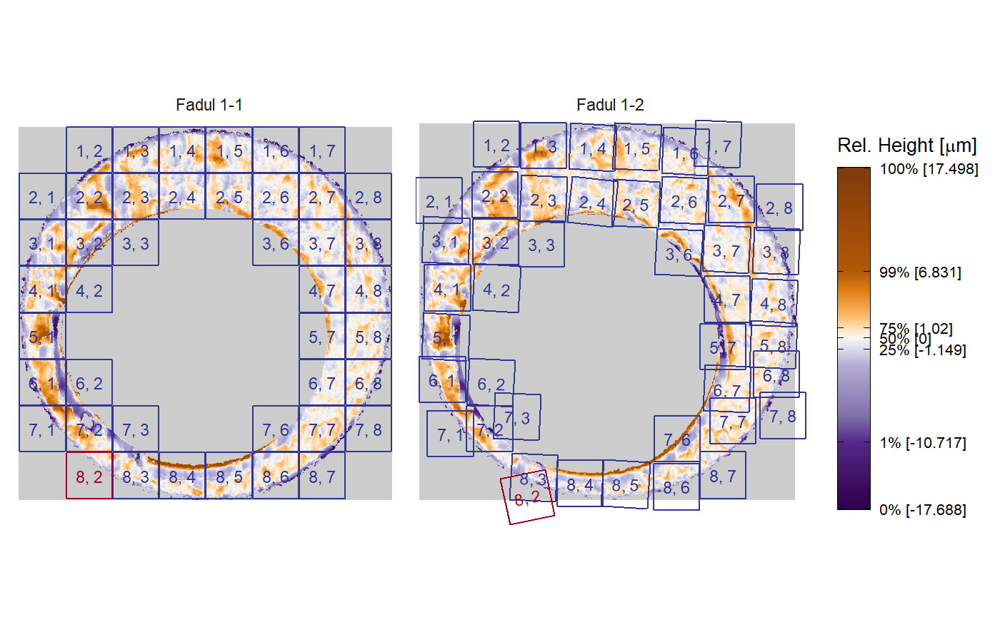
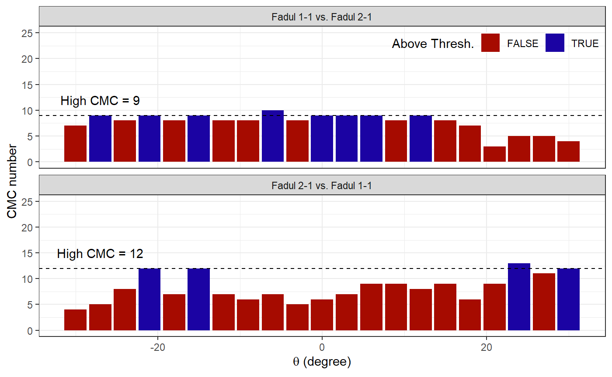
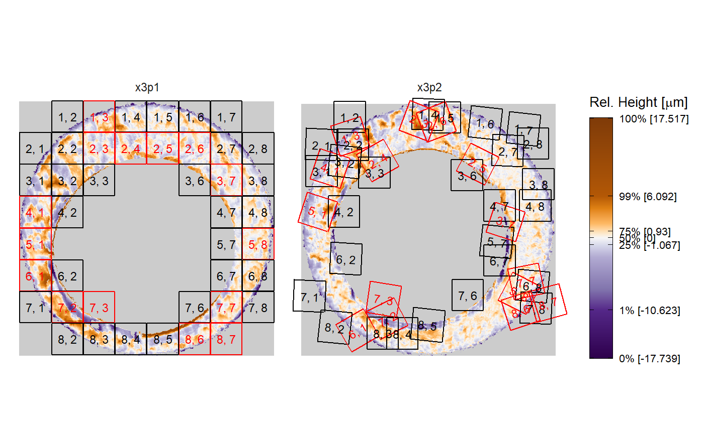
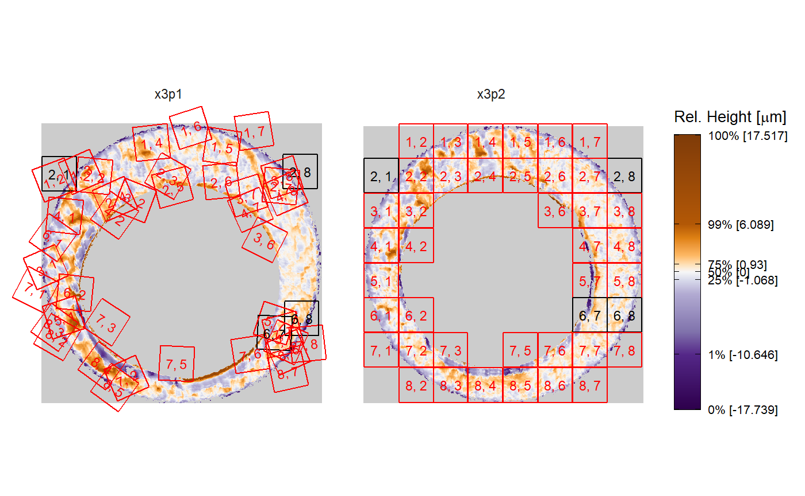

cmcFilter_improved function options
cmcFilter_improved-function-options.RmdSetup
The cmcFilter_improved function implements the High CMC method as described in Tong et al. (2015). This includes performing the CMC method as initially proposed by Song (2013). Due to some ambiguity in how the proposed method was actually implemented, the cmcFilter_improved function includes arguments that control how CMCs are assigned if a cartridge case pair satisfies certain criteria (this will be explained below). This vignette assumes that the reader is familiar with the CMC and will not discuss how CMCs are determined in great detail. Rather, this vignette will describe common, ambiguous situations that arise when performing the CMC method and available options for dealing with these situations. For more information about the initially proposed and High CMC methods, see the Reproducible Example vignette that accompanies this package.
library(cmcR) library(magrittr) library(ggplot2) library(dplyr) #> #> Attaching package: 'dplyr' #> The following objects are masked from 'package:stats': #> #> filter, lag #> The following objects are masked from 'package:base': #> #> intersect, setdiff, setequal, union
To illustrate the usage of the various options available in the cmcFilter_improved function, we will use cartridge case data available from the NIST Ballisitics and Toolmarks Research Database. Note that fadul1.1 and fadul1.2 are a known match pair (i.e., were fired from the same firearm) while fadul2.1 was fired from a different firearm (and is thus classified as a non-match). The following will perform the pre-processing procedures (again, described in the Reproducible Example vignette) for these three cartridge cases.
set.seed(4132020) fadul1.1 <- selectBFImpression_sample_x3p(x3p_path = "https://tsapps.nist.gov/NRBTD/Studies/CartridgeMeasurement/DownloadMeasurement/2d9cc51f-6f66-40a0-973a-a9292dbee36d", ransacIters = 300, ransacInlierThresh = 1e-6, ransacFinalSelectThresh = 2*(1e-5), useResiduals = TRUE, gaussFilterWavelength = c(16,500), gaussFilterType = "bp") fadul1.2 <- selectBFImpression_sample_x3p(x3p_path = "https://tsapps.nist.gov/NRBTD/Studies/CartridgeMeasurement/DownloadMeasurement/cb296c98-39f5-46eb-abff-320a2f5568e8", ransacIters = 300, ransacInlierThresh = 1e-6, ransacFinalSelectThresh = 2*(1e-5), useResiduals = TRUE, gaussFilterWavelength = c(16,500), gaussFilterType = "bp") fadul2.1 <- selectBFImpression_sample_x3p(x3p_path = "https://tsapps.nist.gov/NRBTD/Studies/CartridgeMeasurement/DownloadMeasurement/8ae0b86d-210a-41fd-ad75-8212f9522f96", ransacIters = 300, ransacInlierThresh = 1e-6, ransacFinalSelectThresh = 2*(1e-5), useResiduals = TRUE, gaussFilterWavelength = c(16,500), gaussFilterType = "bp")
Next, fadul1.1 is compared to fadul1.2 and fadul2.1 using the correlation cell comparison procedure outlined in Song (2013).
kmComparison <- cmcR::cellCCF_bothDirections(x3p1 = fadul1.1$x3p, x3p2 = fadul1.2$x3p, cellNumHoriz = 8, regionToCellProp = 9, minObservedProp = .1) knmComparison <- cmcR::cellCCF_bothDirections(x3p1 = fadul1.1$x3p, x3p2 = fadul2.1$x3p, cellNumHoriz = 8, regionToCellProp = 9, minObservedProp = .1)
Finally, the High CMC method can be applied to the features extracted from the correlation cell comparison procedure. This is where the cmcFilter_improved function is used. The next few sections will use illustrate conventions and options in the cmcFilter_improved function using the features extracted from the correlation cell comparison procedure
cmcFilter_improved conventions
The following plots show the CMC counts per \(\theta\) value considered (-30 degrees to 30 degrees with a step size of 3 degrees) under the specified CCF\(_{\max}\) and translation thresholds in both directions (how these CMCs are determined is discussed in the Reproducible Example vignette). The \(\theta\) value at which the CMC count attains a mode is likely the approximate rotation needed to align the two cartridge case scans. However, these examples illuminate some ambiguities in the original description of the High CMC method for how to handle certain behavior.
The plot below shows the CMC count per \(\theta\) distributions for the matching pair of fadul1.1 and fadul1.2. In the “Fadul 1-1 vs. Fadul 1-2” direction (meaning fadul1.1 was partitioned into a grid of cells and compared to regions in fadul2.1 rather than the other way around), we can see that a CMC count mode is attained at \(\theta = -24\) degrees. Further, the only \(\theta\) value with associated CMC count greater than or equal to the CMC\(_{\text{high}}\) threshold (defined to be CMC\(_{\max} - \tau\) for \(\tau = 1\) in this example) is \(\theta = -27\) degrees, which happens to be adjacent to \(\theta = -24\) degrees based on the grid of \(\theta\) values considered. As such, we would say that this direction “passes” the High CMC criterion. On the other hand, the “Fadul 1-2 vs. Fadul 1-1” direction yields a series of 4 \(\theta\) values from \(-18\) to \(27\) degrees that tie for the CMC\(_{\max}\) count. Tong et al. (2015) do not discuss how to handle such ties which we have observed to be fairly common when performing these comparisons. In the package, the median of such consecutive \(\theta\) values is used as the (un)official mode for the direction. Thus, \(\theta = 22.5\) degrees would be used as the \(\theta\) mode value in this example. This seems to agree with \(\theta = -24\) identified as the mode in the other direction (within an allowable threshold). However, an obvious question is: “how many consecutive \(\theta\) values is too many?” Additionally, Tong et al. (2015) don’t say what to do if both directions pass the High CMC criterion (as they do in this example), but the \(\theta\) modes identified disagree with each other (e.g., the mode occurs at \(\theta = -24\) degrees in one direction but \(\theta = 12\) degrees in the other). The cmcFilter_improved function contains internal logic that determines whether the modal \(\theta\) values agree with each other (are within theta_thresh of each other, up to a sign).
cmcPerThetaBarPlot(kmComparison, ccf_thresh = .5, dx_thresh = 25, highCMCThresh = 1, x3pNames = c("Fadul 1-1","Fadul 1-2")) + ylim(c(NA,40))

Since both directions pass the High CMC criterion, all CMCs in and within theta_thresh of the CMC modes identified (which, again, are \(-24\) and \(22.5\) degrees) will be tallied for the “official” High CMC count (excluding replicates). Using a theta_thresh = 3, we can see based on the plot below that 42 out of 43 total cells were declared CMCs.
kmCMC <- cmcFilter_improved(cellCCF_bothDirections_output = kmComparison, ccf_thresh = .5, dx_thresh = 25, theta_thresh = 3) kmCMC_plt <- cmcPlot(x3p1 = fadul1.1$x3p, x3p2 = fadul1.2$x3p, cellCCF_bothDirections_output = kmComparison, cmcFilter_improved_output = kmCMC, x3pNames = c("Fadul 1-1","Fadul 1-2")) kmCMC_plt$highCMC

The missingTheta_decision argument
In contrast to the known match pair, the plots below show the CMC count per \(\theta\) distributions for the non-match pair fadul1.1 and fadul2.1 under the same thresholds. Note that “Fadul 1-1 vs. Fadul 2-1” direction would actually pass the High CMC criterion since the only \(\theta\) with associated CMC count greater than or equal to the \(CMC_{\text{high}} = 22\) threshold is \(\theta = -6\) degrees. Depending on how the theta_thresh argument is set, the “Fadul 2-1 vs. Fadul 1-1” direction may fail High CMC criterion. For example, theta_thresh = 3 degrees would cause the direction to fail since \(\theta = 30\) degrees would be “too far” from the CMC count mode of \(\theta = 24\) degrees. Now the question becomes: “what do we do if only one direction passes the High CMC criterion?” The missingTheta_decision argument dictates how the cmcFilter_improved function handles such cases.
cmcPerThetaBarPlot(knmComparison, ccf_thresh = .5, dx_thresh = 25, highCMCThresh = 1, x3pNames = c("Fadul 1-1","Fadul 2-1"))

The missingTheta_decision argument can take on 3 different strings, "replace", "dismiss", and "fail", representing 3 possible approaches to dealing with cartridge case pairs for which only direction passes the High CMC criterion. missingTheta_decision = "replace" is arguably the most “liberal” of the 3 options in that it replaces the missing \(\theta\) in the direction that failed the High CMC criterion with the opposite of the \(\theta\) value identified in the other direction and then calculates the High CMCs as if both direction had passed the criterion. In the example above, this equates to using \(\theta = 6\) degrees in the “Fadul 2-1 vs. Fadul 1-1” direction. Using this argument below on the non-match pair yields 32 High CMCs - which is quite high for a truly non-match pair. These are visualized below. Of course, tuning the thresholds will change the High CMC count (for example, setting ccf_thresh = .7 below yields 0 High CMCs).
knmCMC_replace <- cmcFilter_improved(cellCCF_bothDirections_output = knmComparison, ccf_thresh = .5, dx_thresh = 25, theta_thresh = 3, missingTheta_decision = "replace") knmCMC_replace_plt <- cmcPlot(x3p1 = fadul1.1$x3p, x3p2 = fadul2.1$x3p, cellCCF_bothDirections_output = knmComparison, cmcFilter_improved_output = knmCMC_replace) knmCMC_replace_plt$highCMC

A slightly more “conservative” option would be to only count the High CMCs in the direction that passed the High CMC criterion and only count the initial CMCs (i.e., CMCs identified under the initially proposed method) in the other. Doing so for the currently considered non-match pair reduces the High CMC count from 32 to 28, which are visualized below.
knmCMC_dismiss <- cmcFilter_improved(cellCCF_bothDirections_output = knmComparison, ccf_thresh = .5, dx_thresh = 25, theta_thresh = 3, missingTheta_decision = "dismiss") knmCMC_dismiss_plt <- cmcPlot(x3p1 = fadul1.1$x3p, x3p2 = fadul2.1$x3p, cellCCF_bothDirections_output = knmComparison, cmcFilter_improved_output = knmCMC_dismiss) knmCMC_dismiss_plt$highCMC

Finally, the most “conservative” option would be to only count High CMCs for cartridge case pairs that pass the High CMC criterion in both directions. That is, the pair would “fail” the High CMC criterion if either direction fails. In the event that a cartridge case pair fails the High CMC criterion for any reason, Tong et al. (2015) proposes using the minimum of the initial CMC counts determined in both directions. For the current non-match example, there were 5 initial CMCs for the “Fadul 1-1 vs. Fadul 2-1” direction and 4 initial CMCs for the “Fadul 2-1 vs. Fadul 1-1” direction. Thus, the official initial CMC count would be 4, which are visualized below.
knmCMC_fail <- cmcFilter_improved(cellCCF_bothDirections_output = knmComparison, ccf_thresh = .5, dx_thresh = 25, theta_thresh = 3, missingTheta_decision = "fail") knmCMC_fail_plt <- cmcPlot(x3p1 = fadul1.1$x3p, x3p2 = fadul2.1$x3p, cellCCF_bothDirections_output = knmComparison, cmcFilter_improved_output = knmCMC_fail) knmCMC_fail_plt$initialCMC

The compareInitialAndHighThetas argument
Consider now the non-match comparison in which the translation thresholds are changed from 25 pixels to a slightly more restrictive 20 pixels. Even with a more restrictive translation threshold, the pair was still assigned 26 High CMCs. Consider, however, the behavior of the median \(\theta\) values calculated under the initially proposed method and the High CMC method. Indeed, if we were to only consider the median \(\theta\) values under the initially proposed method, they would appear to agree with each other (within theta_thresh = 3, at least) and similarly for the High CMC median \(\theta\) values. However, the median \(\theta\) values for the respective directions clearly don’t agree (\(-3\) and \(15\) degrees in one direction and \(6\) and \(-12\) degrees in the other). It’s reasonable to assume for a truly matching pair that the consensual \(\theta\) values (where a “consensus” is determined by the median) should agree between the initially proposed and High CMC methods in both directions. Indeed, we have observed after considerable experimentation that this holds true for matching pairs. While not discussed in Tong et al. (2015), we can use this to our advantage to weed-out non-matches that appear to have matching consensual \(\theta\) values if considering the initially proposed or High CMC results independently. The compareInitialAndHighThetas argument can be set to TRUE (default is FALSE) to employ internal logic that determines whether the median \(\theta\) values between both methods in both directions are within theta_thresh of each other. If a disagreement occurs, then the cartridge case pair is assigned 0 High CMCs.
knmCMC_transThresh20 <- cmcFilter_improved(knmComparison, ccf_thresh = .5, dx_thresh = 20, theta_thresh = 3, missingTheta_decision = "replace") #Initially proposed method median theta values: bind_rows(knmCMC_transThresh20$initialCMCs) %>% mutate(comparison = c(rep("comparison_1to2",nrow(knmCMC_transThresh20$initialCMCs$comparison_1to2)), rep("comparison_2to1",nrow(knmCMC_transThresh20$initialCMCs$comparison_2to1)))) %>% group_by(comparison) %>% summarize(theta = median(theta)) #> # A tibble: 2 x 2 #> comparison theta #> <chr> <dbl> #> 1 comparison_1to2 -3 #> 2 comparison_2to1 6 #High CMC method median theta values: knmCMC_transThresh20$highCMCs %>% group_by(comparison) %>% summarize(theta = median(theta)) #> # A tibble: 2 x 2 #> comparison theta #> <chr> <dbl> #> 1 comparison_1to2 15 #> 2 comparison_2to1 -12
Setting compareInitialAndHighThetas = TRUE for the current non-match examples yields 0 high CMCs as seen below.
knmCMC_transThresh20_compare <- cmcFilter_improved(knmComparison, ccf_thresh = .5, dx_thresh = 20, theta_thresh = 3, missingTheta_decision = "replace", compareInitialAndHighThetas = TRUE) nrow(knmCMC_transThresh20_compare$highCMCs) #> [1] 0
As an interesting final note, it’s important to realize that specifying less restrictive thresholds does not imply that a cartridge pair will be assigned a larger High CMC count (although this is the case under the initially proposed method). This is because of how the High CMCs are determined: if all restrictions were to be lifted such that all cells were declared to be CMCs, then there wouldn’t be a definite mode for the CMC count per \(\theta\) distributions. This is illustrated by the non-match comparison if we change theta_thresh = 3 to be theta_thresh = 6, as seen below. Making the threshold too flexible makes the cartridge case pair fail the High CMC criterion in both directions, in which case it is assigned 0 High CMCs.
knmCMC <- cmcFilter_improved(knmComparison, ccf_thresh = .5, dx_thresh = 20, theta_thresh = 6) nrow(knmCMC$highCMCs) #> [1] 0